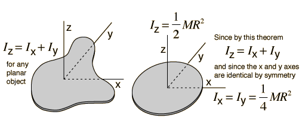

Perpendicular Axis Theorem
For a planar object, the moment of inertia about an axis perpendicular to the plane is the sum of the moments of inertia of two perpendicular axes through the same point in the plane of the object. The utility of this theorem
goes beyond that of calculating moments of strictly planar objects. It is a valuable tool in the building up of the moments of inertia of three dimensional objects such as cylinders by breaking them up into planar disks and summing the moments of inertia of the composite disks.

|
Index
Moment of inertia concepts |